UT3 · Obligaciones empresariales con la Seguridad Social
Gestiona las obligaciones de la empresa con la Seguridad Social, aplicando normativa, procedimientos de afiliación y cotización, comunicaciones y registro documental.
Criterios de evaluación del RA3
1. Sistema de Seguridad Social
El sistema de Seguridad Social protege determinadas situaciones y articula obligaciones para empresas y personas trabajadoras. La gestión administrativa exige distinguir sujetos, regímenes, entidades y trámites, utilizar fuentes oficiales y documentar cada actuación.
Entender el sistema antes de memorizar trámites
La Seguridad Social no es únicamente «lo que se descuenta en la nómina». Es un sistema público de protección que relaciona personas trabajadoras, empresas y entidades gestoras mediante derechos, obligaciones, cotizaciones y prestaciones. Para un técnico de RR. HH. lo importante es comprender qué hecho se produce y qué consecuencia administrativa genera.
Conviene separar cuatro preguntas: quién interviene, en qué régimen está encuadrado, qué obligación o protección aparece y qué organismo o canal gestiona el trámite. Esta secuencia evita confundir Tesorería General, Instituto Nacional de la Seguridad Social, mutuas u otros órganos.
Ejemplo. Contratar a una persona genera actuaciones de encuadramiento y cotización; una incapacidad temporal añade además una situación protegida con efectos económicos. Son piezas relacionadas, pero no el mismo trámite.
Método profesional
- Identificar el hecho y el periodo.
- Consultar normativa y datos vigentes.
- Realizar o verificar el trámite/cálculo.
- Obtener justificante de la comunicación.
- Archivar el expediente con trazabilidad.
| CASO PROFESIONAL Una empresa de Tenerife solicita tramitar este supuesto. Antes de enviarlo, comprueba identidad, fechas, situación previa, datos económicos cuando proceda y evidencia que deberá conservarse. |
|---|
Comprueba
¿Qué dato podría provocar un error si no se contrasta antes de realizar el trámite?
2. Inscripción y CCC
Antes de incorporar personal, la empresa debe tener correctamente identificados sus datos de inscripción y códigos de cuenta de cotización cuando procedan. El técnico comprueba actividad, domicilio, régimen, contingencias y datos asociados antes de cursar movimientos.
Empresa y Seguridad Social: la identificación debe ser coherente
Antes de comunicar altas, la empresa debe estar correctamente identificada ante la Tesorería. El Código de Cuenta de Cotización permite vincular obligaciones de cotización con una empresa y determinadas características. No debe confundirse con el NIF de la empresa ni con el número de Seguridad Social de una persona trabajadora.
El técnico revisa razón social, identificación fiscal, actividad, domicilio, régimen y datos asociados al CCC. Una empresa puede necesitar más de un código en determinados supuestos; por eso no debe copiarse automáticamente el utilizado en otra relación laboral.
Ejemplo guiado. Una empresa abre un centro y va a contratar personal. Antes de tramitar la primera alta se verifica que el CCC que se pretende usar corresponde a la situación adecuada. Si el código es incorrecto, los movimientos posteriores pueden quedar asociados de forma errónea y obligar a rectificaciones.
Método profesional
- Identificar el hecho y el periodo.
- Consultar normativa y datos vigentes.
- Realizar o verificar el trámite/cálculo.
- Obtener justificante de la comunicación.
- Archivar el expediente con trazabilidad.
| CASO PROFESIONAL Una empresa de Tenerife solicita tramitar este supuesto. Antes de enviarlo, comprueba identidad, fechas, situación previa, datos económicos cuando proceda y evidencia que deberá conservarse. |
|---|
Comprueba
¿Qué dato podría provocar un error si no se contrasta antes de realizar el trámite?
3. Afiliación, altas y bajas
Afiliación, alta, baja y variaciones no son conceptos intercambiables. La afiliación identifica a la persona en el sistema; altas y bajas sitúan su relación con una actividad, y las variaciones actualizan datos relevantes. Cada movimiento debe corresponder con hechos y fechas reales.
Afiliación no es lo mismo que alta
La afiliación incorpora a una persona al sistema y su número la identifica a lo largo de su vida. El alta comunica que comienza una actividad incluida en un régimen; la baja comunica su finalización y una variación modifica datos relevantes de una relación ya existente. Una misma persona no «se afilia de nuevo» cada vez que cambia de empresa.
Cómo razonar un movimiento
- Identifica a la persona sin ambigüedad.
- Comprueba si dispone de número de Seguridad Social.
- Determina empresa, CCC, régimen y fecha real de inicio o fin.
- Verifica datos contractuales que afecten al movimiento.
- Realiza la comunicación dentro del plazo aplicable y conserva respuesta.
Ejemplo. Una persona ya trabajó anteriormente y comienza en otra empresa el lunes. RR. HH. no solicita una nueva afiliación: utiliza su identificación existente y tramita el alta que corresponde a la nueva relación.
Método profesional
- Identificar el hecho y el periodo.
- Consultar normativa y datos vigentes.
- Realizar o verificar el trámite/cálculo.
- Obtener justificante de la comunicación.
- Archivar el expediente con trazabilidad.
| CASO PROFESIONAL Una empresa de Tenerife solicita tramitar este supuesto. Antes de enviarlo, comprueba identidad, fechas, situación previa, datos económicos cuando proceda y evidencia que deberá conservarse. |
|---|
Comprueba
¿Qué dato podría provocar un error si no se contrasta antes de realizar el trámite?
4. Bases de cotización
La base de cotización se determina aplicando reglas a las retribuciones y conceptos computables del periodo. Antes de calcular se identifican contingencias, grupo cuando proceda, topes y situaciones especiales. El cálculo debe conservar sus datos de origen.
De la retribución a la base
La base de cotización no se obtiene copiando el «líquido a percibir». Se parte de conceptos retributivos y se aplican reglas sobre qué computa, cómo se integra y qué límites corresponden al periodo. También pueden existir situaciones especiales que modifican el procedimiento.
Para aprender el cálculo, separa siempre: remuneración computable del mes, prorrata de pagas extraordinarias cuando corresponda, otros conceptos computables y comprobación de límites. Después identifica para qué contingencia se necesita la base. Mostrar cada paso es más importante que memorizar una cifra anual que cambiará.
Ejemplo didáctico. Si una nómina incluye salario base, complemento salarial y una paga extraordinaria no prorrateada, el alumno debe analizar qué importe mensual de esa paga se integra en la base conforme a las reglas aplicables, aunque no se cobre físicamente ese mes.
Método profesional
- Identificar el hecho y el periodo.
- Consultar normativa y datos vigentes.
- Realizar o verificar el trámite/cálculo.
- Obtener justificante de la comunicación.
- Archivar el expediente con trazabilidad.
| CASO PROFESIONAL Una empresa de Tenerife solicita tramitar este supuesto. Antes de enviarlo, comprueba identidad, fechas, situación previa, datos económicos cuando proceda y evidencia que deberá conservarse. |
|---|
Comprueba
¿Qué dato podría provocar un error si no se contrasta antes de realizar el trámite?
5. Cuotas y liquidación
Las cuotas resultan de aplicar tipos y reglas vigentes a las bases correspondientes, distinguiendo aportaciones empresariales y de la persona trabajadora. La liquidación debe poder reconciliarse con nóminas, movimientos de afiliación y datos comunicados.
De la base a la cuota
Una vez obtenidas las bases, se aplican los tipos vigentes que correspondan. Debe distinguirse qué parte soporta la empresa y qué parte corresponde a la persona trabajadora. El resultado de cotización empresarial no es simplemente la suma de las deducciones visibles en la nómina.
La liquidación mensual debe reconciliar tres fuentes: movimientos de afiliación, nóminas y datos de cotización. Si una persona figura de baja en una fecha distinta de la nómina, o una base no coincide con la retribución documentada, el técnico investiga la diferencia antes de cerrar.
Método de comprobación
- Verifica bases por persona y periodo.
- Aplica tipos del periodo correcto.
- Separa aportación empresarial y del trabajador.
- Contrasta totales con nóminas.
- Revisa respuesta del sistema de liquidación y conserva justificantes.
Método profesional
- Identificar el hecho y el periodo.
- Consultar normativa y datos vigentes.
- Realizar o verificar el trámite/cálculo.
- Obtener justificante de la comunicación.
- Archivar el expediente con trazabilidad.
| CASO PROFESIONAL Una empresa de Tenerife solicita tramitar este supuesto. Antes de enviarlo, comprueba identidad, fechas, situación previa, datos económicos cuando proceda y evidencia que deberá conservarse. |
|---|
Comprueba
¿Qué dato podría provocar un error si no se contrasta antes de realizar el trámite?
6. Prestaciones económicas
Las prestaciones económicas responden a contingencias y requisitos diferentes. El técnico debe saber localizar la prestación, identificar quién gestiona o paga en cada supuesto y reunir la información necesaria sin confundir prestación con salario ordinario.
Prestación, contingencia y entidad responsable
Una prestación económica intenta proteger una situación definida legalmente. Para resolver un caso hay que identificar primero la contingencia: enfermedad o accidente, nacimiento y cuidado, desempleo, jubilación u otra situación protegida. Después se estudian requisitos, base reguladora cuando proceda, duración y entidad competente.
El técnico de empresa no «concede» todas las prestaciones. Su papel puede consistir en comunicar datos, emitir documentación, aplicar determinados efectos en nómina o colaborar con la entidad responsable. Distinguir funciones evita informar al trabajador de forma incorrecta.
Ejemplo. Ante una baja médica, RR. HH. no transforma el salario ordinario en una cantidad arbitraria. Identifica contingencia y periodo, aplica las reglas correspondientes y documenta los datos que afectan a nómina y cotización.
Método profesional
- Identificar el hecho y el periodo.
- Consultar normativa y datos vigentes.
- Realizar o verificar el trámite/cálculo.
- Obtener justificante de la comunicación.
- Archivar el expediente con trazabilidad.
| CASO PROFESIONAL Una empresa de Tenerife solicita tramitar este supuesto. Antes de enviarlo, comprueba identidad, fechas, situación previa, datos económicos cuando proceda y evidencia que deberá conservarse. |
|---|
Comprueba
¿Qué dato podría provocar un error si no se contrasta antes de realizar el trámite?
7. Incapacidad y otras situaciones
Situaciones como incapacidad temporal, nacimiento y cuidado u otras incidencias pueden afectar cotización, pago y comunicaciones. Se registra fecha de inicio, partes o información disponible, efectos y finalización, evitando modificar datos sin soporte.
Incapacidad temporal: sigue una línea temporal
La incapacidad temporal debe estudiarse por fechas: inicio de la situación, días transcurridos, contingencia, cambios y finalización. Estas fechas condicionan efectos económicos y administrativos. El técnico registra únicamente información necesaria y utiliza los canales oficiales disponibles, respetando la confidencialidad de los datos de salud.
También pueden existir otras situaciones con tratamiento propio, como nacimiento y cuidado de menor o riesgo durante embarazo o lactancia. No deben resolverse copiando el esquema de la incapacidad temporal: cada una tiene causa, requisitos y efectos específicos.
Ejemplo. Dos trabajadores están ausentes durante el mismo número de días, uno por enfermedad común y otro por nacimiento y cuidado. La coincidencia temporal no significa que el cálculo, la prestación o la gestión sean iguales.
Método profesional
- Identificar el hecho y el periodo.
- Consultar normativa y datos vigentes.
- Realizar o verificar el trámite/cálculo.
- Obtener justificante de la comunicación.
- Archivar el expediente con trazabilidad.
| CASO PROFESIONAL Una empresa de Tenerife solicita tramitar este supuesto. Antes de enviarlo, comprueba identidad, fechas, situación previa, datos económicos cuando proceda y evidencia que deberá conservarse. |
|---|
Comprueba
¿Qué dato podría provocar un error si no se contrasta antes de realizar el trámite?
8. Inspección y obligaciones
La empresa está sujeta a obligaciones de colaboración, conservación y atención de requerimientos. La Inspección y otros órganos ejercen funciones diferenciadas. Una gestión correcta conserva documentos, justifica cálculos y permite responder con trazabilidad.
Estar preparado para una comprobación
La empresa debe poder justificar altas, bajas, cotizaciones y documentación laboral. Una actuación inspectora no debería obligar a «reconstruir» apresuradamente expedientes que nunca estuvieron ordenados. La mejor preparación es una gestión cotidiana trazable.
Ante un requerimiento se identifica exactamente qué se solicita, periodo afectado, plazo y responsable interno. Se recopilan documentos auténticos y coherentes; nunca se alteran registros para que parezcan anteriores. Si existe un error, se documenta y se tramita su corrección por el procedimiento correspondiente.
Ejemplo
Se solicita acreditar determinados movimientos y cotizaciones. RR. HH. localiza justificantes, contratos y liquidaciones mediante el índice del expediente, verifica que las fechas coinciden y prepara la respuesta dentro del plazo.
Método profesional
- Identificar el hecho y el periodo.
- Consultar normativa y datos vigentes.
- Realizar o verificar el trámite/cálculo.
- Obtener justificante de la comunicación.
- Archivar el expediente con trazabilidad.
| CASO PROFESIONAL Una empresa de Tenerife solicita tramitar este supuesto. Antes de enviarlo, comprueba identidad, fechas, situación previa, datos económicos cuando proceda y evidencia que deberá conservarse. |
|---|
Comprueba
¿Qué dato podría provocar un error si no se contrasta antes de realizar el trámite?
9. Previsión social complementaria
Los sistemas complementarios de previsión social pueden coexistir con la protección pública. El técnico distingue su naturaleza, condiciones y tratamiento documental y evita presentarlos como sustitutos automáticos de las obligaciones de Seguridad Social.
Protección pública y protección complementaria
La previsión social complementaria añade mecanismos de protección o ahorro a los previstos por el sistema público, pero no elimina las obligaciones de afiliación y cotización. El alumno debe identificar qué instrumento existe, quién realiza aportaciones, qué condiciones lo regulan y cómo se documenta.
En la empresa puede aparecer a través de compromisos establecidos por convenio, acuerdos o políticas retributivas. Antes de registrar una aportación hay que comprobar el instrumento concreto y su tratamiento, evitando generalizar reglas de un producto a otro.
Ejemplo. Si un convenio establece una aportación empresarial a un sistema complementario para determinado colectivo, RR. HH. identifica personas incluidas, cuantía o fórmula, periodicidad y evidencia de las aportaciones. No sustituye por ello las cotizaciones ordinarias.
Método profesional
- Identificar el hecho y el periodo.
- Consultar normativa y datos vigentes.
- Realizar o verificar el trámite/cálculo.
- Obtener justificante de la comunicación.
- Archivar el expediente con trazabilidad.
| CASO PROFESIONAL Una empresa de Tenerife solicita tramitar este supuesto. Antes de enviarlo, comprueba identidad, fechas, situación previa, datos económicos cuando proceda y evidencia que deberá conservarse. |
|---|
Comprueba
¿Qué dato podría provocar un error si no se contrasta antes de realizar el trámite?
10. Sistema RED y comunicaciones
Las comunicaciones telemáticas requieren identificar el servicio adecuado, usuario autorizado, plazo y justificante. Sistema RED y demás servicios electrónicos convierten el recibo o respuesta del sistema en una evidencia esencial del expediente.
El trámite no termina al pulsar «enviar»
Los servicios telemáticos permiten comunicar movimientos y gestionar información, pero una operación profesional incluye preparación, envío, lectura de la respuesta y archivo. Una transmisión puede ser rechazada o contener advertencias; por eso el justificante debe revisarse, no simplemente descargarse.
Antes de enviar se comprueban autorización, empresa/CCC, persona, tipo de movimiento, fecha y datos asociados. Después se conserva la respuesta vinculada al expediente. Si existe error, se sigue el procedimiento de corrección y queda evidencia de ambas actuaciones.
Ejemplo. El técnico prepara un alta, revisa los datos con la ficha de contratación, transmite por el canal correspondiente y comprueba la respuesta. Solo marca la tarea como completada cuando dispone de evidencia válida.
Método profesional
- Identificar el hecho y el periodo.
- Consultar normativa y datos vigentes.
- Realizar o verificar el trámite/cálculo.
- Obtener justificante de la comunicación.
- Archivar el expediente con trazabilidad.
| CASO PROFESIONAL Una empresa de Tenerife solicita tramitar este supuesto. Antes de enviarlo, comprueba identidad, fechas, situación previa, datos económicos cuando proceda y evidencia que deberá conservarse. |
|---|
Comprueba
¿Qué dato podría provocar un error si no se contrasta antes de realizar el trámite?
11. Archivo y trazabilidad
El expediente digital debe relacionar persona, empresa, movimiento, periodo, documento, justificante y responsable. Los permisos de acceso, protección de datos, nomenclatura y conservación son parte del procedimiento y permiten reconstruir qué se hizo y cuándo.
Un expediente debe poder reconstruirse
El archivo relaciona empresa, persona, periodo, movimiento, documentos y justificantes. Una estructura útil permite responder preguntas simples: ¿qué se comunicó?, ¿cuándo?, ¿quién lo hizo?, ¿qué respondió el sistema?, ¿hubo una rectificación? Si esas respuestas dependen de recordar quién llevaba la empresa, la trazabilidad es insuficiente.
Se aplican permisos de acceso, nomenclatura coherente, control de versiones y reglas de conservación. Los documentos con datos personales no deben duplicarse sin necesidad en equipos o correos particulares.
Checklist de cierre
- Datos identificativos y fechas coinciden.
- Existe justificante de cada comunicación relevante.
- Las rectificaciones conservan historial.
- El expediente tiene responsable y estado.
- La documentación puede localizarse sin depender de una persona concreta.
Método profesional
- Identificar el hecho y el periodo.
- Consultar normativa y datos vigentes.
- Realizar o verificar el trámite/cálculo.
- Obtener justificante de la comunicación.
- Archivar el expediente con trazabilidad.
| CASO PROFESIONAL Una empresa de Tenerife solicita tramitar este supuesto. Antes de enviarlo, comprueba identidad, fechas, situación previa, datos económicos cuando proceda y evidencia que deberá conservarse. |
|---|
Comprueba
¿Qué dato podría provocar un error si no se contrasta antes de realizar el trámite?
Resumen de la UT3
La gestión con Seguridad Social combina identificación correcta de sujetos y situaciones, afiliación, cotización, prestaciones, comunicaciones telemáticas y conservación de evidencias. Un trámite correcto debe ser legalmente fundado, coherente con nómina y afiliación y completamente trazable.
Práctica interactiva por criterios de evaluación
No basta con completar los ejercicios: se consideran dominados cuando la respuesta es correcta. Puedes repetirlos cuantas veces necesites.
Progreso de práctica
0 de 48 actividades dominadas.
Reconocer los trámites obligatorios
Se han reconocido los trámites obligatorios para el empresario ante la Seguridad Social.
Analizar bases de cotización y aportaciones
Se ha seleccionado y analizado la normativa que regula las bases de cotización y la determinación de aportaciones a la Seguridad Social.
Calcular prestaciones económicas
Se han calculado las principales prestaciones económicas de la Seguridad Social.
Tramitar afiliación, altas, bajas y variaciones
Se ha elaborado la documentación para los trámites de afiliación, alta, baja y variación de datos en los distintos regímenes de la Seguridad Social.
Reconocer vías de comunicación
Se han reconocido las vías de comunicación, convencionales y telemáticas, con las personas y organismos oficiales implicados en el proceso de afiliación, alta, baja y variación de datos.
Prever actuaciones inspectoras y fiscalizadoras
Se han previsto las actuaciones y procedimientos de los órganos inspectores y fiscalizadores en materia de Seguridad Social.
Reconocer sistemas complementarios de previsión social
Se han reconocido sistemas complementarios de previsión social.
Utilizar aplicaciones informáticas
Se han empleado programas informáticos específicos para la confección, registro y archivo de la información y documentación relevante generada en la tramitación documental con la Seguridad Social.
Autoevaluación de preparación · UT3
Entrenamiento previo al examen. Puedes repetirla tantas veces como necesites y recibirás corrección inmediata. No forma parte de la calificación.
Examen tipo test · UT3
Convocatoria activada por el profesor. La versión se genera y corrige en el servidor y no muestra las soluciones.
Antes de comenzar
- Un único intento.
- Las preguntas se distribuyen por criterio de evaluación.
- La versión queda vinculada a tu intento aunque recargues la página.
- Las incidencias de foco se registran durante la prueba.
Programa de recuperación
Esta zona se activa tras el cierre de la evaluación únicamente con los criterios que todavía debes superar.
Consultando tu situación...
Fuentes y actualización
- Real Decreto 1584/2011, currículo del título de Técnico Superior en Administración y Finanzas.
- Real Decreto Legislativo 2/2015, Estatuto de los Trabajadores, versión consolidada.
- Real Decreto Legislativo 8/2015, Ley General de la Seguridad Social, versión consolidada.
- SEPE: modelos y guía de contratos.
- TGSS / Seguridad Social: afiliación, altas, bajas y comunicaciones.
- Servicio Canario de Empleo: programas y recursos de empleo en Canarias.
- Convenios colectivos vigentes aplicables a cada caso.
Mis resultados y feedback
Consulta las actividades abiertas ya corregidas y el desglose de tu rúbrica.
Consulta aquí tus correcciones validadas.